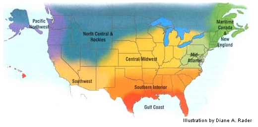
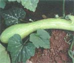
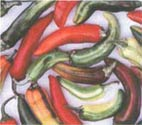
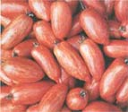
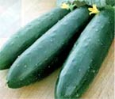
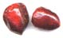

Timely Gardening Tips For Where You Live
February/March 2003
Edited by Carol Mack
Maritime Canada/New England
Winter for the Northern gardener is a time to read the catalogs and plan next spring's garden. Fruit trees can be pruned from January at least until March. If you are going to graft, cut scion wood now and wrap it in four or five layers of plastic to store in the refrigerator. (The plastic protects the wood from any ethylene gases emitted by fruit in your refrigerator) Start early seedlings of leeks, onions and celery; even peppers can be started in late February. Wait until March for most other veggies. Check the root cellar and pantry for spoilage in onions, apples and squash. If there is a small problem, make soup. If the problem is worse, consider freezing food before it all rots.
Mid-Atlantic
Improve your germination rates by starting seeds in an incubator. You can create a toasty, well-ventilated spot using an old refrigerator, a shielded lightbulb and a small fan powered through a thermostat set at 86 degrees. Use the incubator to presprout radish, spinach, pea, carrot and beet seeds on moist paper towels - then plant them outside under row cover as soon as they send out their first little roots. Start seed for transplants of bulb onions, eggplant, broccoli, cabbage, cauliflower, lettuce, and some early tomatoes and peppers. Plant cool-weather greens in a cold frame for a jump on the season. Try some globe arti chokes in a cold frame, too - if exposed to temperatures between 35 degrees and 42 degrees while they are young, they often produce the same year. Plant potatoes around St. Patrick's Day for high, early yields.
Southern Interior
February and March are transition months for Southern gardeners. By now you've already planned out (or at least thought about) your garden for the upcoming season. In February, start warm-season crops (tomatoes, cucumbers, peppers, eggplants, etc.) indoors to have healthy transplants ready to plant after winter's last frost. Till soil four to six weeks before transplanting. This also is a great time to get your soil tested and add any nutrients it might need. Other activities for these months include pruning - especially roses (See " Pruning Made Easy ," Page 78).
Gulf Coast
Garden fever starts early along the Gulf Coast. Our average last frost is around mid-February, but often we can plant tomato transplants in early February. A lot depends on how many you are planting. If you're only setting out a dozen plants, then take a chance - and keep the covers handy. Wait until March to transplant cold-sensitive eggplants and peppers. Plant a late crop of broccoli and lettuce transplants in early February and sow fast-growing, seeded crops like radishes, turnips and mustard. March begins the hectic planting of warmseason crops like beans, corn, cucumbers and melons, but whit until April to sow hotweather crops like okra and southern peas. Apply a dormant-oil spray to fruit trees early this season before they begin to break dormancy. Don't forget the flower beds - plant dahlias and gladiolas now. In March, plant sunny beds with seed or transplants of marigolds, zinnias, gomphrena and rudbeckia, and brighten shady spots with impatiens and caladiums.
Central/Midwest
Spring is coming! Time to start many plants inside - be sure that you are beginning with disease-free conditions. Wash used trays and inserts, and fill with a quality seed-starting medium. Peppers will not germinate well at room temperature - keep them at a constant 80 degrees for best success. To avoid leggy plants, keep your light source as close as possible to the seedlings. Wait until the soil outside is workable and about 50 degrees to seed some early flowers and greens. If you are itching to plant outdoors, try using a cold frame or a minigreenhouse tunnel to heat up a patch of soil.
North Central & Rockies
Sprinkle fireplace ashes on lingering snow to warm your garden soil weeks early. After the soil warms to 40 degrees, begin planting frost-tolerant greens like arugula, Chinese cabbage, cress, kale, mustard, bok choy and spinach. To speed germination, cover with fabric row covers or, if you are more ambitious, make a simple cold frame. I (Bill McDorman) built one from a great set of plans found in the book Solar Gardening by Leandre Poisson (on MOTHER'S Bookshelf, Page 129). My community garden plot, where I used the cold frame, was the only plot completely green at the beginning of May. I was harvesting delicious greens when most of the gardeners were showing up to plant their first seeds. Don't rush the season when starting tomato and pepper transplants. Small, vigorously growing plants will surge ahead of stressed, larger ones.
Pacific Northwest
Time for green thumbs of the Pacific Northwest to come out of hibernation. Garden peas and sweet peas can be planted directly into the garden as early as mid-February. To give the sweet peas a jump-start on the season, lightly scratch the seed coat with sandpaper and soak the seed in water overnight. Transplant or direct-seed lettuce, spinach, mustard and other greens, protecting them with a cloche or row cover. This is also the perfect time to start many vegetable, herb and flower seeds indoors. Build a compost sifter of hardware cloth nailed on a frame of 1x4-inch boards and add the sifted "garden gold" to your soil mix for flower and vegetable starts. This is a great way to concentrate all the nutrients around the transplant roots for season-long feeding. Cool-season cover crops will nourish summer plantings if you sow them now and turn them under in late May.
Southwest
In central California, we go through exceptional droughts at least once every 10 years where, by law, we are forced to stop watering the European turfgrass lawns for the summer. They die, then everyone rolls out new turf when the drought restrictions are lifted. Wouldn't it be better to expect and prepare for future droughts with native plants in our landscaping and thick mulch in our vegetable gardens? One strategy is to plant vegetable varieties adapted to growing in drought conditions, like tepary beans from the Pimas of central Arizona and Hopi corn developed to grow in sand dunes without irrigation. Hot peppers also are a good choice. The beauty of growing a pepper crop in these conditions is that the hot weather and lack of water really help to develop the heat of the peppers.
Our thanks to the following for their contributions to the Almanac: Roberta Bailey, FEDCO Seeds, Waterville, Maine; Cricket Rakita, Southern Exposure Seed Exchange, Mineral, Virginia; Connie Dam-Byl, William Dam Seeds, Dundas, Ontario; Matt Barthel, Seed Savers Exchange, Decorah, Iowa; Bill McDorman, Seeds Trust/High Altitude Gardens, Hailey, Idaho; Josh Kirschenbaum, Territorial Seed Company, Cottage Grove, Oregon; Rose Marie Nichols McGee, Nichols Garden Nursery, Albany, Oregon; Craig and Sue Dremann, Redwood City Seed Co., Redwood City, California; Dean Lollis, Park Seed Co., Greenwood, South Carolina; William D. Adams, Burton, Texas.
Our Almanac contributors name their favorite varieties
ROBERTA BAILEY MARITIME CANADA/ NEW ENGLAND
'Amplissimo Victoria' soup peas - Nutty, delicious flavor; prolific 5- to 6-foot-tall vines. Great cold-climate substitute for garbanzos. Let dry on vine, then shell and dry before storing. 80 days.
'White Russian' kale - Silvery leaf, white ribs, sweet and tasty. The best producer of young shoots and new growth in spring on over-wintered kale.
[Available from FEDCO Seeds: (207) 873-7333; www.fedcoseeds.com ]
CRICKET RAKITA, MID-ATLANTIC
'Costata Roenesca' squash - The best-tasting zucchini ever. Heavily ribbed fruits are striped with alternating light- and darkgreen shades. Italian heirloom. Tender up to 18 inches. 62 days.
'Old Time Tennessee' muskmelon - So fragrant it can be harvested in the dark. Salmon flesh; large fruits, averaging 12 pounds. Not a good keeper, but flavor is outstanding. 95 days.
[Available from Southern Exposure Seed Exchange; (540) 894-9480; www.southernexposure.com ]
DEAN LOLLIS, SOUTHERN INTERIOR
'Flamenco' pansy, hybrid mix - A one-of-a-kind mix of 2 1/2- to 3-inch double-flowered pansies in shades of violet, burgundy, rose, yellow and white.
'Spring Swallow' cucumber - Six-foot vines produce a bounty of 7- to 10-inch, dark-green fruits. Thrives in heat and humidity (unlike many other cucumbers) and resists watermelon virus and cucumber mosaic virus, while tolerating mildew.
[Available from Park Seed Company; (800) 845-3369; www.parkseed.com ]
BILL ADAMS, GULF COAST
'Purple Calabash' tomato - Its wonderful, complex flavor more than compensates for its purple-black color and plentiful folds and creases. Grow this delicious old-timer anti let your tastebuds decide.
'Tromboncino' squash - Smooth, buttery texture. Vigorous enough to outgrow squash-vine borer. The seeds develop in the end of this 12- to 18-inch-long beauty - the rest is "pure butter."
[Available from Territorial Seed Company; (541) 942-9547; www.territorialseed.com ]
MATT BARTHEL, CENTRAL/MIDWEST
'Speckled Roman' tomato - Meaty tasting, gorgeous orange- and yellow-striped fruit from a naturally stabilized cross between heirloom 'Antique Roman' and 'Banana Legs' tomatoes. Predicted to he as popular as 'Brandywine.'
'Fish' Chile pepper - Pre-1870s African-American heirloom pepper from the Philadelphia and Baltimore areas. White variegated leaves, 2- to 3-inch-long fruits changing from striped cream to orange to all red as they ripen. Great ornamental.
[Available from Seed Savers Exchange; (563) 382-5990: www.seedsavers.org ]
CONNIE DAM-BYL, CENTRAL/MIDWEST
'Shining Star' lettuce - Large, medium-dark green, glossy Waldman-type heads. Very slow to bolt tinder summer heat, but sizes up quickly. This was the best-looking leaf lettuce in our trials.
'Harmony' tomato - A perfect saladette tomato. Superb flavor, deep red color and firm fruits that ripen in clusters of eight to 14. 'Harmony' grows well, both in the greenhouse and in the field.
[Available from William Dam Seeds; (905) 628-6641; www.damseeds.com ]
BILL MCDORMAN, N. CENTRAL & ROCKIES
'Sasha's Altai' tomato - Siberian variety with incredible earliness (59 days); extraordinarily sweet and juicy flavor. Three-inch, 5- to 8-ounce, slightly flattened, bright-red fruits. Indeterminate.
'Galina' tomato - Another Siberian, producing round, yellow, 1-inch cherry tomatoes nn vigorous plants. Arguably our most flavorful tomato. Indeterminate and early (59 days).
[Available from Seeds Trust High Altitude Gardens; (208) 788-4363); www.seedstrust.com ]
JOSH KIRCHENBAUM, NORTHWEST
'Papaya Pear' summer squash - Unique papaya-shaped fruit can be harvested in about 40 days from direct sowing. The semibush plants pump out a continuous supply of fruit best eaten when just 3 inches long and 2 to 3 inches wide.
'Poinsett 97' slicing cucumber - New, emerald green, nonhybrid slicing cucumber bred at Cornell University. Very crisp and meaty with a sweet, mellow flavor. Organic growers will especially appreciate the 12 separate disease tolerances.
'Purple Majesty' ornamental millet - An All America Selection Gold Medal winner! Deep purple plants are crowned with 8- to 12-inch purple flower spikes. Use immature spikes for dramatic floral arrangements or let them mature for generous supply of birdseed.
[Available from Territorial Seed Company; (541) 942-9547; www.territorialseed.com ]
SUE AND CRAIG DREMANN, SOUTHWEST
'White Bullet' habanero pepper - White fruit, 1/2 inch wide and 1 inch long. Absolutely the hottest, earliest maturing, most productive, and rarest of the habanero group.
[Available from Redwood City Seed - Company; (650) 325-7333; www.ecoseeds.com ]
ROSE MARIE NICHOLS MCGEE, NORTHWEST
'Lemon' cucumber - Lemon-shaped fruit with a mild, sweet flavor. My family simply can never have too many and we always harvest when they show only a touch of yellow at the stem end. 60 days.
'Romano' pole bean - Very tender, flat pods, with a rich green-bean flavor.
[Nichols Garden Nursery; (800) 4223985; www.nicholsgardennursery.com ]
|
'Tromboncino' squash |
 'Fish' hot pepper |
 'Speckled Roman' tomato |
|
 'Papaya Pear' summer squash. |
 Poinsett 97' is a new open-pollinated cucumber with exceptional disease resistance. |
 'Mayan Cobanero' love-pepper - Bright red, heart-shaped fruit about 1/2 inch long. One of the world's hottest peppers. Originally grown by the Mayans. |
|
 |
 |
|